1072B10 inlet manifold - r + r and replace seal
- Path
- Procedures > 10 ENGINE > 1072 INLET AND EXHAUST MANIFOLDS > 1072B inlet manifolds > 1072B10 inlet manifold - r + r and replace seal
- Kind
- repair procedure (removal / refitting; the operation number is the code)
- Applies to
- engines: 1.6 TS , 1.8 TS, 2.0 JTS, 1.9 JTD 16v, 2.0 JTS, 2.4 JTD 20v; all production periods
- Interactive page
- https://sloeber94.github.io/elrnDB-a156/en/#/3237695
Applies to: engines: 1.6 TS , 1.8 TS; all production periods
 Removing
Removing
 Refitting
RefittingPlace the car on the lifting bridge.
Disconnect battery terminal (-).
Applies to: engines: 1.6 TS ; all production periods
7055B54 under-engine guard - r r
1076B50 exhaust pipe attachment to engine - r + r
1072B50 sleeves connecting air capacity box to inlet manifold is - r+r
1072B54 sleeves connecting air capacity box to inlet manifold is - r+r
Unscrew fixing screw of bracket supporting injection/ignition wiring on gearbox side inlet manifold.
Unscrew earth cable fixing nut on gearbox side inlet manifold.
Applies to: engines: 1.8 TS; all production periods
7055B54 under-engine guard - r r
1076B50 exhaust pipe attachment to engine - r + r
1072D10 modular inlet manifold - r+r
Unscrew earth cable fixing nut on gearbox side inlet manifold.
Applies to: engines: 1.6 TS , 1.8 TS; all production periods
Unscrew the ten nuts fixing inlet manifold and remove it from engine compartment.
Remove inlet manifold gasket without damaging contact surfaces between head and manifold.
Applies to: engines: 1.6 TS , 1.8 TS; all production periods
Refitting
RemovingClean contact surfaces between head and inlet manifold, replace worn gasket with a new one.
Place inlet manifold on engine head and screw the ten fixing nuts to their stud bolts.
 | Fastening | Component | Ø | Value (daNm) |
|---|---|---|---|---|
- | Nut | INLET MANIFOLD | M8 | 2.3 - 3.3 |
Applies to: engines: 1.8 TS; all production periods
Screw earth cable fixing nut on gearbox side inlet manifold.
1072D10 modular inlet manifold - r+r
Applies to: engines: 1.6 TS ; all production periods
Screw earth cable fixing nut on gearbox side inlet manifold.
Screw screw fixing bracket supporting injection/ignition wiring on gearbox side inlet manifold.
| Fastening | Component | Ø | Value (daNm) |
|---|---|---|---|---|
- | Bolt | Electrical wiring mounting bracket | M8 | 2.3 - 3.3 |
1072B54 sleeves connecting air capacity box to inlet manifold is - r+r
1072B50 sleeves connecting air capacity box to inlet manifold is - r+r
Applies to: engines: 1.6 TS , 1.8 TS; all production periods
1056B60 single fuel manifold pipe, with injectors - r + r
Connect battery terminal (-).
Applies to: engines: 2.0 JTS, 2.0 JTS; all production periods
Removing
RefittingPosition the vehicle on the ramp.
Proceed with removal 7055B54 under-engine guard - r r .
Proceed with removal 1076B18 rigid section of exhaust pipe between catalytic converter and silencer - r + r .
Proceed with removal 1016A40 ignition coil cover on cylinder head- r+r .
Proceed with removal 5530B10 battery - r+r .
Proceed with removal 1072D10 modular inlet manifold - r+r .
Proceed with removal 1056F60 SINGLE FUEL MANIFOLD PIPE, complete with injectors - R.R. .
1. Undo the bolts (1a) and remove the bracket (1b) after releasing the electrical wiring from the band.
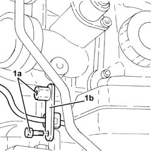
Applies to: engines: 2.0 JTS, 2.0 JTS; all production periods
1. Release the fuel supply pipe to the high-pressure pump (1a) from the attachment (1b) on the inlet manifold.
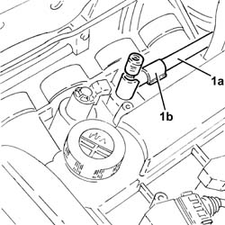
Applies to: engines: 2.0 JTS, 2.0 JTS; all production periods
1. Release the wiring (1a) from the band (1b) on the inlet manifold.
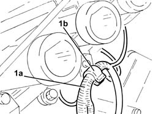
Applies to: engines: 2.0 JTS, 2.0 JTS; all production periods
1. Undo the nuts (1a) and remove the inlet manifold (1b) complete wtih timing variator electromagnet (1c).
2. Remove the inlet manifold gasket.
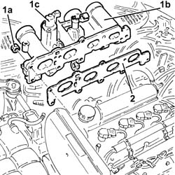
Applies to: engines: 2.0 JTS, 2.0 JTS; all production periods
Refitting
Removing1. Fit a new inlet manifold gasket.
2. Refit the inlet manifold (2a) complete with timing variator electromagnet (2b) and tighten the nuts (2c) to the specified torque.
| Fastening | Component | Ø | Value (daNm) |
|---|---|---|---|---|
2c | Nut | INLET MANIFOLD | M8 | (Cylinder head side) 2.3 ÷ 2.8 |
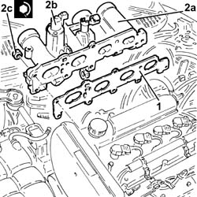
Applies to: engines: 2.0 JTS, 2.0 JTS; all production periods
Secure the wiring to the band located under the inlet manifold.
Secure the fuel delivery pipe to the high-pressure pump to the attachment on the inlet manifold.
Refit the bracket back in its housing and secure it using the bolts, then secure the electrical wiring to the band.
Proceed with refitting 1056F60 SINGLE FUEL MANIFOLD PIPE, complete with injectors - R.R. .
Proceed with refitting 1072D10 modular inlet manifold - r+r .
Proceed with refitting 5530B10 battery - r+r .
Proceed with refitting 1016A40 ignition coil cover on cylinder head- r+r .
Proceed with refitting 1076B18 rigid section of exhaust pipe between catalytic converter and silencer - r + r .
Proceed with refitting 7055B54 under-engine guard - r r .
Remove the car from the ramps.
Applies to: engines: 1.9 JTD 16v; all production periods
Removing
RefittingPosition the vehicle on the ramp
Proceed with removal 1016A10 sound-proofing cover - r + r
Ensure that the ignition key is in the OFF position, then disconnect the negative battery terminal (-).
 | Name | Connector |
|---|---|---|
- | Battery |
Proceed with removal 1008C10 power unit upper reaction link r r
Proceed with removal 1060G80 ds electric injection control unit - r r
Proceed with removal 4450B04 right front wheel r r
Proceed with removal 7055B54 under-engine guard - r r
Proceed with removal - 7055B91 Right front WHEEL ARCH LINER - R.R.
Proceed with removal 1092G10 single engine belt r r
Proceed with removal 1092A10 Crankshaft services PULLEY - R.R.
Proceed with removal 1092G20 engine component single belt fixed tensioner - one - r + r
Proceed with removal 1032D12 timing system protective cover(s) - r + r
Proceed with removal 1032B10 toothed timing belt - r + r for timing adjustment or replacement
Proceed with removal 5530B10 battery - r+r
1. Disconnect the electrical connection from the engine coolant temperature sensor.
| Name | Connector |
|---|---|---|
1 | Engine temperature sender unit |
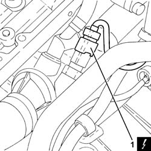
Applies to: engines: 1.9 JTD 16v; all production periods
1. Disconnect the electrical connections from the heater plugs.
| Name | Connector |
|---|---|---|
1 | Heater plug |
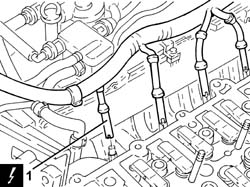
Applies to: engines: 1.9 JTD 16v; all production periods
1. Disconnect the electrical connection from the air flow meter.
| Name | Connector |
|---|---|---|
1 | Air flow meter |
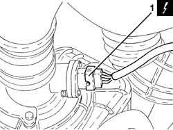
Applies to: engines: 1.9 JTD 16v; all production periods
1. Disconnect the electrical connection from the E.G.R. valve.
| Name | Connector |
|---|---|---|
1 | EGR solenoid |
2. Disconnect the electrical connection from the excess pressure sensor.
| Name | Connector |
|---|---|---|
2 | Turbocharging sensor |
Release the wiring from the bands near the thermostat.
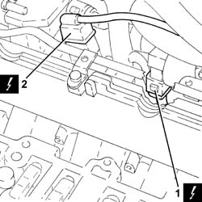
Applies to: engines: 1.9 JTD 16v; all production periods
1. Loosen the band and disconnect the coolant return pipe from the engine coolant reservoir, thermostat side.
2. Loosen the band and disconnect the coolant outlet pipe from the cylinder head, engine coolant return pipe to the coolant reservoir side.
3. Loosen the band and disconnect the flexible coolant return pipe from the rigid coolant return pipe to the engine coolant reservoir.
4. Undo the bolts (4a) and remove hose (4b) carrying coolant to the coolant supply reservoir.
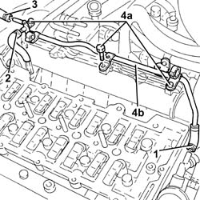
Applies to: engines: 1.9 JTD 16v; all production periods
1. Loosen the band and disconnect the air intake hose from the connector on the throttle casing.
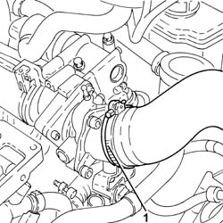
Applies to: engines: 1.9 JTD 16v; all production periods
1. Undo the bolts (1a) and remove the connector on the throttle body (1b) complete with gasket (1c).
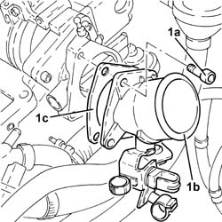
Applies to: engines: 1.9 JTD 16v; all production periods
1. Disconnect the vacuum pipe from the pneumatic valve on the throttle body.
2. Undo the bolts (2a) and remove the electropneumatically controlled throttle body (2b) complete with gasket (2c).
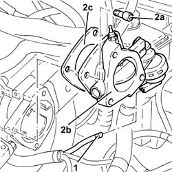
Applies to: engines: 1.9 JTD 16v; all production periods
Disconnect the vacuum pipe from the three-way connector on the brake servo vacuum intake pipe.
Disconnect the intermediate coupling for the vacuum pipe for the turbocharger vane position control actuator solenoid valve.
1. Undo the bolts fixing the exhaust gas outlet pipe to the water/exhaust gas heat exchanger for the E.G.R. system, E.G.R. system solenoid valve side.
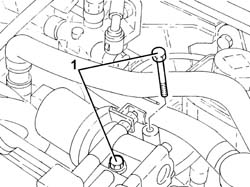
Applies to: engines: 1.9 JTD 16v; all production periods
1. Undo the nuts (1a) and move the oil vapour recovery pipe mounting bracket (1b) aside.
2. Undo the bolts (2a) and remove the E.G.R. system solenoid valve (2b).
3. Remove the gasket.
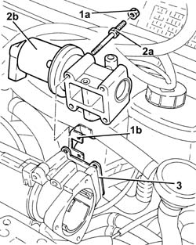
Applies to: engines: 1.9 JTD 16v; all production periods
1. Disconnect the rapid attachment for the fuel return pipe from the fuel filter, return manifold pipe side.
2. Disconnect the rapid attachment for the fuel return pipe to the tank, return manifold pipe side.
3. Loosen the band and disconnect the fuel return pipe from the pressure pump, fuel return manifold pipe side.
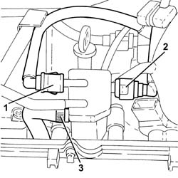
Applies to: engines: 1.9 JTD 16v; all production periods
1. Undo the bolts (1a) and remove the fuel return manifold pipe (1b) complete with the pipe from the injectors to the fuel recovery manifold (1c).
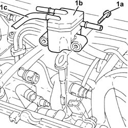
Applies to: engines: 1.9 JTD 16v; all production periods
1. Undo the bolt fixing the guide pipe for the engine oil dipstick to the pressure pump mounting.
2. Disconnect the electrical connection from the fuel pressure regulator.
| Name | Connector |
|---|---|---|
2 | Fuel pressure regulator |
Release the electrical wiring from the band and move it to the side.
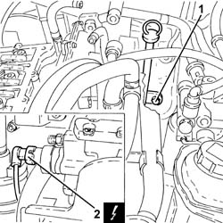
Applies to: engines: 1.9 JTD 16v; all production periods
1. Loosen the band and disconnect the condensation oil recovery pipe from the crankcase sump.
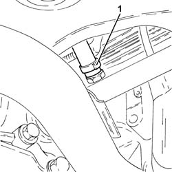
Applies to: engines: 1.9 JTD 16v; all production periods
1. Loosen the band and disconnect the oil vapour recovery pipe from the separator.
2. Loosen the band and disconnect the oil vapour recirculation pipe from separator.
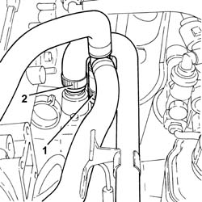
Applies to: engines: 1.9 JTD 16v; all production periods
Disconnect the electrical connection from the solenoid on the vacuum tank.
| Name | Connector |
|---|---|---|
- | Butterfly casing solenoid valve |
1. Undo the bolts (1a) and remove the mounting bracket (1b) complete with oil vapour separator (1c) and vacuum reservoir (1d).
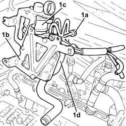
Applies to: engines: 1.9 JTD 16v; all production periods
1. Stop the pressure pump pulley from rotating using two bolts.
2. Undo the pressure pump pulley nut.
Undo the two bolts fitted previously to stop the rotation of the pressure pump pulley.
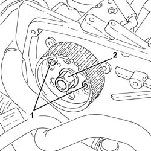
Applies to: engines: 1.9 JTD 16v; all production periods
1. Remove the pressure pump pulley (1a) using the tool (1b).
 | Name | Country |
|---|---|---|
1b | Extractor | 1.860.854.001 |
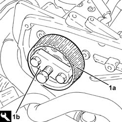
Applies to: engines: 1.9 JTD 16v; all production periods
1. Undo nuts (1a) and remove pressure pump (1b) from its mount.
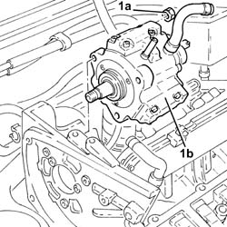
Applies to: engines: 1.9 JTD 16v; all production periods
1. Disconnect the electrical connection from the engine oil pressure warning light switch.
| Name | Connector |
|---|---|---|
1 | Engine oil pressure sensor |
2. Disconnect the electrical connection for the engine oil level sensor.
| Name | Connector |
|---|---|---|
2 | Engine oil level sensor |
3. Disconnect the electrical connection for the rpm sensor.
| Name | Connector |
|---|---|---|
3 | Rpm sensor |
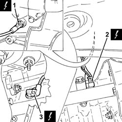
Applies to: engines: 1.9 JTD 16v; all production periods
1. Disconnect the earth lead from the alternator.
| Name | Connector |
|---|---|---|
1 | Alternator |
2. Disconnect the earth lead from the starter motor.
| Name | Connector |
|---|---|---|
2 | Starter' motor |
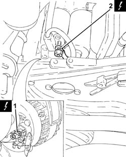
Applies to: engines: 1.9 JTD 16v; all production periods
1. Disconnect the electrical connection from the pre-heating control unit.
| Name | Connector |
|---|---|---|
1 | Plug preheating control unit |
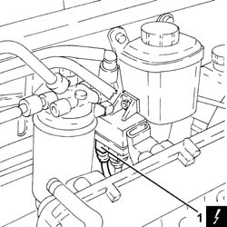
Applies to: engines: 1.9 JTD 16v; all production periods
1. Undo the bolts (1a) and remove the power steering pump drive pulley (1b).
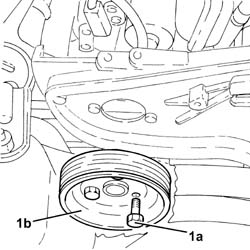
Applies to: engines: 1.9 JTD 16v; all production periods
1. Undo the bolts securing the power steering pump to its mounting.
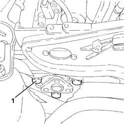
Applies to: engines: 1.9 JTD 16v; all production periods
Remove the guide tube complete with engine oil dipstick.
1. Undo the bolts (1a) and remove the pressure pump mounting (1b).
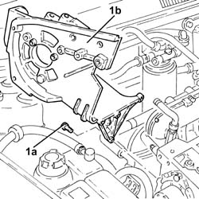
Applies to: engines: 1.9 JTD 16v; all production periods
1. Undo the nuts (1a) and remove the air chamber assembly (1b) complete with gasket (1c).
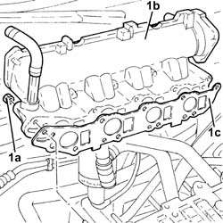
Applies to: engines: 1.9 JTD 16v; all production periods
Refitting
Removing1. Refit air chamber (1a) complete with gasket (1b) and secure it by tightening nuts (1c) to the recommended torque.
| Fastening | Component | Ø | Value (daNm) |
|---|---|---|---|---|
1c | Bolt | INLET MANIFOLD | M8 | Cylinder head side) 2.3 ÷ 2.8 |
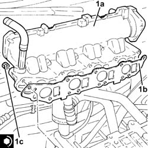
Applies to: engines: 1.9 JTD 16v; all production periods
1. Place the pressure pump support (1a) back in its housing and secure it tightening the bolts (1b).
| Fastening | Component | Ø | Value (daNm) |
|---|---|---|---|---|
1b | Bolt | INJECTION PRESSURE PUMP MOUNT | M8 | (Engine crankcase side) 2.3 ÷ 2.8 |
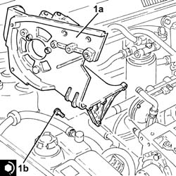
Applies to: engines: 1.9 JTD 16v; all production periods
Refit the guide tube and engine oil dipstick.
1. Place the power assisted steering pump back in its housing and fix it tightening the bolts to the recommended torque.
| Fastening | Component | Ø | Value (daNm) |
|---|---|---|---|---|
1 | Bolt | POWER STEERING PUMP | M8 | (Support side) 2.3 ÷ 2.8 |
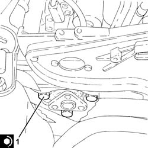
Applies to: engines: 1.9 JTD 16v; all production periods
1. Place the power assisted steering pump pulley (1a) back in its housing and fix it tightening the bolts (1b) to the recommended torque.
| Fastening | Component | Ø | Value (daNm) |
|---|---|---|---|---|
1b | Bolt | POWER STEERING PUMP DRIVE PULLEY | M8 | (Power assisted steering pump side 23 28 |
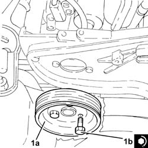
Applies to: engines: 1.9 JTD 16v; all production periods
Connect the electrical connection to the pre-heating control unit.
Connect the earth lead to the starter motor.
Connect the earth lead to the alternator.
Connect the electrical connection for the rpm sensor.
Connect the electrical connection for the engine oil level sensor.
Connect the electrical connection to the engine oil pressure warning light switch.
1. Fit the clutch pump (1a) back in its housing and tighten the nuts (1b) to the specified torque.
| Fastening | Component | Ø | Value (daNm) |
|---|---|---|---|---|
1b | Nut | PRESSURE PUMP | M8 | (Support side) 2.3 ÷ 2.8 |
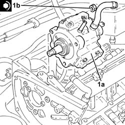
Applies to: engines: 1.9 JTD 16v; all production periods
1. Replace the pressure pump pulley in its housing.
2. Stop the pressure pump pulley from rotating using two bolts.
3. Tighten the pressure pump pulley nut to torque.
| Fastening | Component | Ø | Value (daNm) |
|---|---|---|---|---|
3 | Nut | PRESSURE PUMP CONTROL PULLEY | M14 | 4.5 ÷ 5.5 |
Undo the two bolts fitted previously to stop the rotation of the pressure pump pulley.
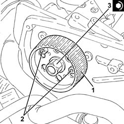
Applies to: engines: 1.9 JTD 16v; all production periods
Place the mounting bracket complete with oil vapour separator and vacuum reservoir back in its housing and secure it using the bolts.
Connect the electrical connection to the solenoid on the vacuum tank.
Connect the oil vapour recirculation pipe to the separator and tighten the band.
Connect the oil vapour recovery pipe to the separator and tighten the band.
Connect the condensation oil recovery pipe to the crankcase sump and tighten the band.
Place the electrical wiring back in its housing and fix it to the band.
Connect the electrical connection to the fuel pressure regulator.
Tighten the bolt fixing the engine oil dipstick guide pipe to the pressure pump mounting.
Place the fuel return manifold pipe complete with the pipe from the injectors to the fuel recovery manifold back in its housing and secure it using the bolts.
Connect the fuel return pipe to the pressure pump, fuel return manifold pipe side and tighten the band.
Connect the rapid attachment for the fuel return pipe to the tank, fuel return manifold pipe side.
Connect the rapid attachment for the fuel return pipe from the fuel filter, return manifold pipe side.
1. Place the E.G.R. system solenoid valve (1a) complete with gasket (1b) back in its housing and fasten it tightening the bolts (1c) to the recommended torque.
| Fastening | Component | Ø | Value (daNm) |
|---|---|---|---|---|
1c | - | - | - | - |
2. Place the oil vapour recovery pipe mounting bracket (2a) back in its housing and secure it using the nuts (2b).
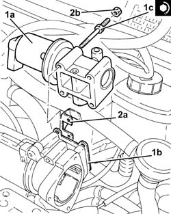
Applies to: engines: 1.9 JTD 16v; all production periods
1. Tighten the bolts fixing the exhaust gas outlet pipe to the water/exhaust gas heat exchanger for the E.G.R. system, E.G.R. system solenoid valve side to the recommended torque.
| Fastening | Component | Ø | Value (daNm) |
|---|---|---|---|---|
1 | Bolt | WATER/GAS HEAT EXCHANGER FOR EGR SYSTEM | M8 | (E.G.R.) solenoid valve side 2.3 ÷ 2.8 |
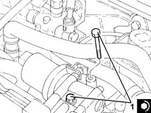
Applies to: engines: 1.9 JTD 16v; all production periods
Connect the intermediate coupling for the vacuum pipe for the turbocharger vane position control actuator solenoid valve.
Connect the vacuum pipe to the three-way connector on the brake servo vacuum intake pipe.
1. Replace the pneumatically-controlled throttle body (1a), complete with gasket (1b), back in its housing and secure by tightening bolts (1c) to the recommended torque.
| Fastening | Component | Ø | Value (daNm) |
|---|---|---|---|---|
1c | - | - | - | - |
2. Connect the vacuum pipe to the pneumatic valve on the throttle body.
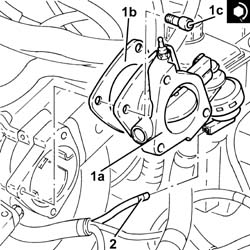
Applies to: engines: 1.9 JTD 16v; all production periods
1. Replace the connector on the throttle body (1a), complete with gasket (1b), back in its housing and secure by tightening bolts (1c) to the recommended torque.
| Fastening | Component | Ø | Value (daNm) |
|---|---|---|---|---|
1c | - | - | - | - |
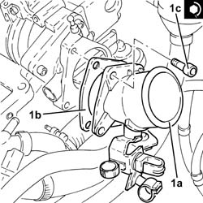
Applies to: engines: 1.9 JTD 16v; all production periods
Connect the air inlet hose to the connector on the throttle casing and tighten the band.
Place the coolant return pipe to the engine cooling system reservoir back in its housing and fix it using the bolts.
Connect the flexible pipe to the coolant return pipe to the engine coolant reservoir and tighten the band.
Connect the coolant oulet pipe from the cylinder head, engine coolant return pipe to the supply reservoir side and tighten the band.
Connect the engine coolant return pipe to the supply reservoir, thermostat side and tighten the band.
Fasten the electrical wiring to the bands near the thermostat.
Connect the electrical connection to the excess pressure sensor.
Connect the electrical connection to the EGR solenoid.
Connect the electrical connection to the air flow meter.
Connect the electrical connections to the heater plugs.
Connect the electrical connection to the engine coolant temperature sensor.
Proceed with refitting 5530B10 battery - r+r
Proceed with refitting 1032B10 toothed timing belt - r + r for timing adjustment or replacement
Proceed with refitting 1032D12 timing system protective cover(s) - r + r
Proceed with refitting 1092G20 engine component single belt fixed tensioner - one - r + r
Proceed with refitting 1092A10 Crankshaft services PULLEY - R.R.
Proceed with refitting 1092G10 single engine belt r r
Proceed with refitting - 7055B91 Right front WHEEL ARCH LINER - R.R.
Proceed with refitting 7055B54 under-engine guard - r r
Proceed with refitting 4450B04 right front wheel r r
Proceed with refitting 1060G80 ds electric injection control unit - r r
Proceed with refitting 1008C10 power unit upper reaction link r r
Connect the negative (-) battery terminal
Proceed with refitting 1016A10 sound-proofing cover - r + r
Remove the car from the ramps.
Applies to: engines: 2.4 JTD 20v; all production periods
Removing
RefittingPosition the vehicle on the ramp.
Proceed with removal 4450B04 right front wheel r r .
Proceed with removal 7055B54 under-engine guard - r r .
Proceed with removal - 7055B91 Right front WHEEL ARCH LINER - R.R. .
Proceed with removal - 7055B66 Engine compartment DUST SHIELD protection in right front wheel arch - R.R. .
Proceed with removal 1092G10 single engine belt r r .
Proceed with removal 1092A10 Crankshaft services PULLEY - R.R. .
Proceed with removal 1092G21 engine component single belt fixed tensioner - r rwith belt removed .
Proceed with removal 1016A10 sound-proofing cover - r + r .
Proceed with removal 1008C10 power unit upper reaction link r r .
Proceed with removal 1032D12 timing system protective cover(s) - r + r .
Proceed with removal 1032B10 toothed timing belt - r + r for timing adjustment or replacement .
Proceed with removal 1060E30 pressure pump pulley - r r .
Proceed with removal 1060E10 pressure pump - r r .
Proceed with removal 1060G70 vacum tank for controlling engine air intake r r .
Proceed with removal 1080D34 engine oil vapour separator - r + r .
Proceed with removal 1084A16 oil dip stick pipe - r r .
Proceed with removal 1060E40 supplementary pressure pump - r r .
1. Undo the nuts (1a) and remove the inlet manifold (1b).
Remove the gasket.
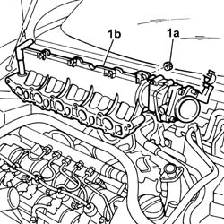
Applies to: engines: 2.4 JTD 20v; all production periods
Refitting
Removing1. Replace intake manifold (1a), complete with gasket and fix it tightening the nuts (1b) to the recommended torque.
| Fastening | Component | Ø | Value (daNm) |
|---|---|---|---|---|
1b | Nut | INLET MANIFOLD | M6 | 0.8 ÷ 1.0 |
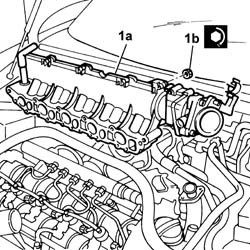
Applies to: engines: 2.4 JTD 20v; all production periods
Proceed with refitting 1060E40 supplementary pressure pump - r r .
Proceed with refitting 1084A16 oil dip stick pipe - r r .
Proceed with refitting 1080D34 engine oil vapour separator - r + r .
Proceed with refitting 1060G70 vacum tank for controlling engine air intake r r .
Proceed with refitting 1060E10 pressure pump - r r .
Proceed with refitting 1060E30 pressure pump pulley - r r .
Proceed with refitting 1032B10 toothed timing belt - r + r for timing adjustment or replacement .
Proceed with refitting 1032D12 timing system protective cover(s) - r + r .
Proceed with refitting 1008C10 power unit upper reaction link r r .
Proceed with refitting 1016A10 sound-proofing cover - r + r .
Proceed with refitting 1092G21 engine component single belt fixed tensioner - r rwith belt removed .
Proceed with refitting 1092A10 Crankshaft services PULLEY - R.R. .
Proceed with refitting 1092G10 single engine belt r r .
Proceed with refitting - 7055B66 Engine compartment DUST SHIELD protection in right front wheel arch - R.R. .
Proceed with refitting - 7055B91 Right front WHEEL ARCH LINER - R.R. .
Proceed with refitting 7055B54 under-engine guard - r r .
Proceed with refitting 4450B04 right front wheel r r .
Remove the car from the ramps.
Topics linked from this page (41)
- 1008C10 power unit upper reaction link r r
- 1016A10 sound-proofing cover - r + r
- 1016A40 ignition coil cover on cylinder head- r+r
- 1032B10 toothed timing belt - r + r for timing adjustment or replacement
- 1032D12 timing system protective cover(s) - r + r
- 1056B60 single fuel manifold pipe, with injectors - r + r
- 1056F60 SINGLE FUEL MANIFOLD PIPE, complete with injectors - R.R.
- 1060E10 pressure pump - r r
- 1060E30 pressure pump pulley - r r
- 1060E40 supplementary pressure pump - r r
- 1060G70 vacum tank for controlling engine air intake r r
- 1060G80 ds electric injection control unit - r r
- 1072B50 sleeves connecting air capacity box to inlet manifold is - r+r
- 1072B54 sleeves connecting air capacity box to inlet manifold is - r+r
- 1072D10 modular inlet manifold - r+r
- 1072D14 sleeves joining long air intake ducts to manifold case - replace with modular manifold removed
- 1076B18 rigid section of exhaust pipe between catalytic converter and silencer - r + r
- 1076B50 exhaust pipe attachment to engine - r + r
- 1080D34 engine oil vapour separator - r + r
- 1084A16 oil dip stick pipe - r r
- 1092A10 Crankshaft services PULLEY - R.R.
- 1092G10 single engine belt r r
- 1092G20 engine component single belt fixed tensioner - one - r + r
- 1092G21 engine component single belt fixed tensioner - r rwith belt removed
- 4450B04 right front wheel r r
- 5530B10 battery - r+r
- 7055B54 under-engine guard - r r
- A1B Battery ( BATTERY NEGATIVE )
- A10 Alternator
- A20 Starter' motor
- A40 Heater plug
- K30 Engine oil pressure sensor (switch)
- K32 Engine oil level sensor
- K36 Engine temperature sender unit
- K41 Air flow meter ( ENGINE )
- K46 Rpm sensor
- K82 Turbocharging sensor
- L30 EGR solenoid
- L62 Butterfly casing solenoid valve ( ENGINE )
- M15 Plug preheating control unit
- N77 Fuel pressure regulator